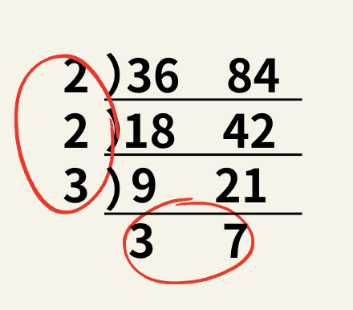

再帰関数のいろは
はじめに
この章では、「再帰関数とは何か」から「再帰関数の実装方法」まで丁寧に説明します。
この記事では、APG4bの該当記事よりも 具体例 を多めに交えながら説明したつもりです。
APG4b を先に読んでから、こちらの記事の練習問題だけを解いていく形でも、こちらの記事を全て読んでいく形でも、どちらでも理解することができると思います。
ところで、再帰 “関数” というように、再帰関数を理解するためにはある程度の関数の知識が必要となるので、関数ってなーに？という方は 1.15.関数 を読んでください。
分からない言葉が出てきた時も、これより前の章を読んで復習することをおすすめします。
再帰関数の雰囲気を知ろう
まず再帰関数とはなんでしょうか。
簡潔に言えば、プログラム内で、ある関数の中 にその関数 自身 の呼び出しが含まれているものです。といっても分かりにくいので、以下の例1で考えてみましょう。
例題①
例題①
今、\(4 \times 4\) のブロックチョコレート🍫があり、これを半分に割ることを繰り返します。
何回割れば、\(1 \times 1\) のピース \(16\) つに分けられるでしょうか？
この問題は、計算で簡単に求められますが、あえて割っていくプロセスを言葉にすると以下のようになります。
操作：今ある \(4 \times 4\) のチョコレートのピースを 半分に割り、
それによってできた \(2 \times 4\) のピース \(2\) つをそれぞれ 半分ずつに割り、
それによってできた \(2 \times 2\) のピース \(4\) つをそれぞれ 半分ずつに割り、
それによってできた \(2 \times 1\) のピース \(8\) つをそれぞれ 半分ずつに割り、
最後に \(1 \times 1\) のピース \(16\) つが残る。
上から順に、1回, 2回, 4回, 8回と、割る操作を行うため、答えは 15回 とわかります。
これは「チョコレートのピースを 半分に割る」という処理をする関数に、複数回、引数としてチョコレートを渡すということを繰り返しているといえます。 イメージとしては、次のような関数です。
void cut(チョコレート){
チョコレートを半分に割る;
cut(割った後のチョコレート);
cut(割った後のチョコレート);
}
cut(割った後のチョコレート) という処理が 2回 書かれているのは、今あるチョコレートを半分に割って、割った後にできる 2つ のピースをそれぞれまた割るためです。
この、複数回割るチョコレートですが、(操作を重ねると)大きさが変わっていくため、for文などを使ったループだと実装が難しく、再帰関数を使った方が実装が楽にすむということです。 現段階で、実装方法を理解する必要はありませんが、疑似コードを載せておきます。
void cut(今のサイズ){ //ブロックチョコレートの1辺の長さが引数
if(今のサイズ == 1){
return; //サイズが1だとこれ以上分けられません
}
割った回数の合計++;
cut(今のサイズ / 2); //割った内の1ピース
cut(今のサイズ / 2); //割った内のもう1ピース
}
再帰関数を実装してみよう
先ほどの例では、再帰関数の雰囲気しか伝わっていないと思うので、ここでは、もう少し簡単な例で実装してみましょう。
例題②
例題②
再帰関数を使って、\(1\) から \(42\) を順に出力して下さい。
解説・ソースコードはこちら↓
#include <bits/stdc++.h>
using namespace std;
void func(int n){
if(n == 43){
return;
}
cout << n << endl;
func(n + 1);
}
int main(){
func(1);
}
まず、main関数が実行されます。
main関数には
func(1);
と記述されています。これは、func 関数に引数 1 を渡しています。
次に func 関数では
if(n == 43)return;
cout << n << endl;
func(n + 1);
と記述されています。
はじめに2行目に注目すると、これは n (= func 関数の引数) を 出力する 処理なので、1 を出力します。
次に3行目に注目します。これは再度func関数を呼び出しているように見えますが、引数として新たにn + 1を渡しているため、呼び出されたfunc関数では 別の処理 が行われます。
具体的には、
main関数でfunc(1)が呼び出され、
func(1)でfunc(2)が呼び出され、
func(2)でfunc(3)が呼び出され、
...
という流れになります。
func(n) では2行目において n が出力されることを踏まえれば、func(1), func(2), ..., func(42) が呼び出されれば、1, 2, ..., 42が出力されることになります。
ここで1行目に注目すると、これは、nが \(43\) の時 (= func(43) が呼び出された時) に return していることが分かります。return はその関数を終了する処理です。この場合、返り値はありません。
ここで return をすると、func(43) での \(43\) の出力処理（2行目）や、func(44)の呼び出し処理(3行目)は行われないため、一連の処理は終了し、結果的に \(1\) から \(42\) を出力できたことになるのです。
実際にAtcoderのコードテストなどで実行すると、正しい結果が得られたことが分かります。
このように、関数がその関数自身を(引数を変えながら)繰り返し呼び出すことを再帰といいます。ある程度感覚は掴めてきたでしょうか？
練習問題①
練習問題①
再帰関数を使って、\(1〜100\) の総和を出力してください。
分からない時も、ぜひヒントや解説を読んで、理解してみてください。
クリックしてヒントを表示
例2のように、再帰関数 func を作成し、func で数字を加算します。
グローバル変数を使うと簡単ですが、グローバル変数を使わないで実装するには、関数の返り値を設定すれば良いです(x を返り値にするには return x; と記述します)。
↓
クリックして解説・ソースコードを表示
例題②では、func 関数を作成し、func(N)では N を出力する、という処理を行なっていました。
この問題も同様な考え方で解くことができます。
まず、大まかに、以下のような方針を立ててみます。
func(1)では \(1〜100\) の和を返り値に、
func(2)では \(2〜100\) の和を返り値に、
func(3)では \(3〜100\) の和を返り値に、
...
func(100)では \(100〜100\) の和を返り値にする
このように定めれば、この問題は func(1) の返り値が答えになります。
ここで、\(1 \leq x < 100\) を満たす x に対して、func(x) の返り値を func(x + 1) の返り値を使って求めることを考えます。
例えば、func(3) の返り値を func(4) の返り値を使って求めることを考えてみます。
func(3) の返り値は \(3〜100\) の和で、func(4) の返り値は \(4〜100\) ですから、
func(3) の返り値 = 3 + \(func(4)\) の返り値
が成り立っていることが分かります。
これより、\(1 \leq x < 100\) を満たす全ての x に対して、
func(x) の返り値 = x + func(x + 1) の返り値
が成り立つことも分かります。これをそのまま実装すればよいです。
具体的には、以下のようにします。
int func(int x){
return x + func(x + 1);
// func(x)の返り値 = x + func(x + 1)の返り値
}
しかしこのままだと、永遠に func 関数が呼び出され続ける、無限ループが起こります。
ここでは、func(100) の時の返り値が \(1〜100\) の和で、func(101) を呼び出す必要はありません。
よって、条件分岐を付け足せばよいです！
完成形はこちら↓
#include <bits/stdc++.h>
using namespace std;
int func(int x){
if(x == 100) return 100;
return x + func(x + 1);
}
int main(){
cout << func(1) << endl;
}
練習問題②
練習問題②
下のリンク先の問題を再帰関数を用いて解いてください。
ABC055 B - Training Camp (diff: 332)
クリックしてヒントを表示
問題文より、\(1〜N\) の積を求めればよいです。
基本的には練習問題1と同じように解けますが、答えの数がとても大きくなるため、long long 型などの大きな数を扱えるデータ型を使っても上限を超えてしまいます。
そこで、答えを \(10^9+7\) で割った余りを求めればよいことに注目しましょう！
↓
クリックして解説・ソースコードを表示
基本的には練習問題1と同様に実装し、掛け算する毎ステップで、現在までの積を \(10^9 + 7\) で割った余りにしてあげればよいです。
これは、
\((A_1 \times A_2 \times \dots \times A_N)\ \%\ M\ = (\dots(((A_1\ \%\ M) \times A_2)\ \%\ M) \dots \times A_N)\ \%\ M\)
が成立する（つまり、「数たちの 積の余り」と「数たちの 余りの積」は一致する）ことを利用しています。
詳しくは、合同式の証明を参照してください。
このテクは競プロでよく使いますよ！
また、余りをとりながら計算していっても、掛け算する過程では約 \(10^{18}\) の数が出てくるため、int 型ではなく long long 型を使いましょう。
ソースコードは以下のようになります↓
#include <bits/stdc++.h>
using namespace std;
long long func(long long x){
if(x == 1){
return 1;
}
return (x * func(x - 1)) % 1000000007;
}
int main(){
long long n;
cin >> n;
cout << func(n) << endl;
}
再帰関数を役立てる
今までは再帰関数を使わない方が簡単に解ける問題ばかり解いてきましたが、ここからは、再帰関数が大いに役立つ問題を解いていきます。
練習問題は、全部解いてみましょう。最初は自力で考えてみたほうが良いですが、詰まったらどんどん解説を見ましょう。
発展問題は、少し難しいのも混じっていますが、できるだけ解いてみてください。もちろん、解説を見て解くのも良いです。
列挙する
練習問題③
練習問題③
下のリンク先の問題を解いてください。
Hackerrank - *2 or +1
これは、与えられた整数 \(N\) に対して、\(\times 2\) または \(+ 1\) するという操作を最大で \(K\) 回行う必要があります。
素直に、あり得る 全ての操作パターン を実行して、得られた整数の個数をカウントしていくのが1番良いです。
具体的には、同じ操作を繰り返し行うことから、再帰関数を使った実装が便利です。何通りの整数が得られたかカウントする時は、違う操作手順で同じ整数が得られる場合 も考慮して、グローバル配列を用いましょう。
計算量は、\(O(2^K)\)になります。
詳しくは、以下のソースコードを参照してください。
#include<bits/stdc++.h>
using namespace std;
int k;
bool can[200000]; // can[i]は "k回以下の操作で整数iを得ることができるか" というbool値
// 関数funcの引数は(現在の整数, 累計操作回数)を表す
void func(int num,int nowk){
// 整数numが得られた
can[num] = true;
// 累計操作回数がまだK回未満であれば次の操作へ
if(nowk < k){
// * 2の操作を行なった時
func(num * 2,nowk + 1);
// + 1の操作を行なった時
func(num + 1,nowk + 1);
}
}
int main(){
int n;
cin >> n >> k; // kはグローバル変数
func(n, 0); // 操作を0回行なった時点での整数nからスタート
int res = 0;
for(int i = 0; i < 200000; i++){
if(can[i]){
res++; // 得られた整数の個数をカウント
}
}
cout << res << endl;
}
発展問題①
発展問題①
下のリンク先の問題を解いてください。
Hackerrank - *2 or +1 or -1
クリックしてヒントを表示
基本的な考え方は、先ほどの練習問題3と同じです。
しかし、全く同じ実装をしても、入出力例3のような \(K\) が大きいケースでは時間がかかり過ぎてしまいます。そこでひと工夫が必要です。
ここでは、再帰関数を呼び出す回数を減らせないか考えてみましょう。
再帰関数を呼び出す回数を約 \(10^6\) 回くらいにできれば、正解することができますよ！
↓
クリックして解説・ソースコードを表示
この問題での基本的な考え方は、練習問題3と同じです。
しかし、この問題では、各数から \(3\) つの数が作れるため、愚直に \(K\) 回の操作をシミュレーションすると、再帰関数の呼び出し回数は \(3^{20}\) = 約 \(3 \times 10^9\) 回となってTLEしてしまいます。
では、どうやって再帰関数の呼び出し関数を減らせばよいでしょうか。
ここで、メモ化再帰 という手法を使います。
「メモ化再帰」とは、「途中の(計算)結果を配列などに格納しておいて、必要ならそれを使い回す」、というテクニックです。
今、この問題でどの部分を「メモ化」すれば良いか考えてみましょう。例えば、\(K = 2\) の時での操作は以下のようになります。
0回の操作で
1が
1回の操作で2,2,0が
2回の操作で4, 3, 1,4, 3, 1,0, 1が
できる
ここで、\(2\) という整数が1回目の操作後に複数回登場していることに注目してください。
当然ですが、どの、\(2\) という整数に操作をしても、その後に得られる整数は同じです。
つまり、既にある整数が出現していたら、その後に操作を続ける必要がなくなる可能性があるということです。
正確にいえば、今できた整数が、既に、今以下の操作回数でつくれていたときは、その後の操作を打ち切って良いです。
無駄な操作を打ち切るために、練習問題3の時のような配列を作ってみましょう。
具体的には、memo[i] = 整数iをつくるための操作の最小回数 のような配列を作り、作れた整数が、操作の最小回数を更新した時に限って、その後の操作を続ければ良いです。
このような処理によって、2種類以上の作り方が存在する整数について
(ex. 1 -> 2 -> 4 -> 3 or 1 -> 2 -> 3)
も、正しく操作の最小回数を求めることができます。
各整数について、"最小回数を更新する"回数は、高々 \(K\) 回で良いことから、再帰関数が呼ばれる回数は多くとも \(2^K \times K \fallingdotseq 2 \times 10^7\) 回になり、十分高速です。
ソースコード↓
#include<bits/stdc++.h>
using namespace std;
int k;
int can[2000000];
void func(int num, int nowk){ // 引数はできた数,これまでの操作回数
can[num] = nowk; // 最小回数を更新
if(nowk < k){ // 次操作してもk回以下に収まっているなら
if(nowk + 1 < can[num * 2]){ // *2した数が最小回数を更新するなら
func(num * 2, nowk + 1);
}
if(nowk + 1 < can[num + 1]){ // +1した数が最小回数を更新するなら
func(num + 1, nowk + 1);
}
if(num - 1 >= 0){ //0以上の整数が作れるなら
if(nowk + 1 < can[num - 1]){ //-1した数が最小回数を更新するなら
func(num - 1, nowk + 1);
}
}
}
}
int main(){
cin >> k;
for(int i = 0; i < 2000000; i++){
can[i] = 100; // 初期化
}
can[1] = 0; // 1という数は0回の操作で作れる
func(1, 0);
int res = 0;
for(int i = 0; i < 2000000; i++){
if(can[i] <= k){
res++; // もしk回以内に作れているなら答えを+1
}
}
cout << res << endl;
}
最大公約数
練習問題④
練習問題④
下のリンク先の問題を解いてください。
Hackerrank - GCD (Basic)
ただし、この問題は前提知識がないと解くのが難しいので、わからない場合はヒントを見ることを推奨します。
クリックしてヒントを表示
この問題は正整数 \(A, B\) がともに大きいため、\(1\) から順に素因数を探していく方法では、時間がかかり過ぎてしまいます。
そこで \(Euclid\) の互除法を利用して求めます。
-
\(Euclid\) の互除法とは
\(Euclid\) の互除法は、簡単にいえば2つの数の最大公約数を簡単に求める手法です。
これはみなさんが自分で最大公約数を求める時に役立つのはもちろん、コンピューターに大きな数の最大公約数を求めてもらう時にも役立ちます。
具体的には、\(a\) を \(b\) で割った余りを \(r\) としたとき
\(GCD(a, b) = GCD(b, r)\)
(ただし、\(GCD(a, b)\) は \(a\) と \(b\) の最大公約数を表す)という性質です。
-
\(Euclid\) の互除法はどうして成り立つのか
この \(Euclid\) の互除法は、主に大きな数の最大公約数を求める時に役立つと述べましたが、これは与えられた \(2\) つの数を、\(GCD\) を変えずに小さく変形していっています。
具体的に、どのような変形をすれば、\(2\) つの数を、\(GCD\) を変えずに小さくできるか考えてみましょう。例として、\(63\) と \(49\) で考えてみます。\(GCD(63, 49) = 7\) です。
早速小さい数字に変形したいのですが、ここで、\(63\) も \(49\) も \(GCD(63, 49)\) の倍数であることに注目してください。
最大公約数なんだから当たり前じゃん、と思うでしょうが、これはとても重要です。
なぜなら、これは \(63\) と \(49\) の差 (\(= 14\)) も \(GCD(63, 49)\)の倍数 であることを意味しているからです。
つまり、\(GCD(63, 49) = GCD(63, 14) = GCD(14, 49)\) が成り立つのです。(補足) 厳密には(難)
\(a \leq b\) を満たす2つの整数 \(a, b\) について、\(a = p \times GCD(a, b), b = q \times GCD(a, b)\) となるように整数 \(p, q\) を定める。
すると、\(GCD\) の定義から、\(p\) と \(q\) は互いに素である。
ここで、\(GCD(b-a, a) \ne GCD(a, b)\)と仮定すると、\(GCD(b - a, a) \ne GCD(a, b)\)
\(\Leftrightarrow GCD((q - p) \times GCD(a, b), p \times GCD(a, b)) \ne GCD(a, b)\)
\(\Leftrightarrow GCD(q - p, p) > 1\)が成り立つ。
しかし、\(q - p\) と \(p\) が共通因数を持つということは、この2つの和である \(q\) も、\(p\) との共通因数を持っているということになり、これは矛盾。
よって、\(GCD(b - a, a) = GCD(a, b)\) が示された。 同様にして、\(GCD(b - a, b) = GCD(a, b)\) も成り立つ。ここでは、より大きい数を小さくしたいので、\(63\) を \(14(63 - 49)\) に変えて、\(GCD(14, 49)\) を求めることにします。
同様に変形をすると、\(GCD(14, 49) = GCD(14, 35)\)となります。
さらに変形をしていくと、\(GCD(14, 49) = GCD(14, 35) = GCD(14, 21) = GCD(14, 7)\)となりますが、この3ステップでは、いずれも小さい数が \(14\)であるため、どれも、大きい数から\(14\)を引くという変形になっています。
これは、「\(49\)」から「\(14\)」をできるだけ引く \(=\)「\(49\)」を「\(14\)」で割った余りにする、という操作にまとめられます。
つまり、\(a\) を \(b\) で割った余りを \(r\) としたとき、\(GCD(a, b) = GCD(b, r)\)が成り立つことがわかり、これはユークリッドの互除法そのものです！！これらを踏まえて、\(GCD(63, 49)\) を求める流れは以下のようになります。
\(GCD(63,49)\)
\(=GCD(49,14)\) ← \(63\) を \(49\) で割った余りは \(14\)
\(=GCD(14,7)\) ← \(49\) を \(14\) で割った余りは \(7\)今、\(14\) と \(7\) という数字が出てきましたが、\(14\) を \(7\) で割った余りは \(0\) であるため、最大公約数は \(7\) であることが容易にわかります。
以上で、\(GCD(63, 49)\) を求めることができました。
あとは、この操作を再帰関数を用いて実装すればよいです。
詳しい実装方法は、下の解説に書いてあります。
↓
クリックして解説を表示
解法はヒントに書いてあります。ここでは、実装方法を述べます。
例えば、\(GCD(63,49)\) を求める時、変形の流れは以下のようになるのでした。
\(GCD(63,49)\)
\(=GCD(49,14)\) ← \(63\) を \(49\) で割った余りは \(14\)
\(=GCD(14,7)\) ← \(49\) を \(14\) で割った余りは \(7\)
よって、関数 MyGCD をつくり、引数に a, b を指定し、返り値 (=答え) に GCD(b, a % b) を指定すれば良いです。
具体的には、以下のようになります。
long long MyGCD(long long A, long long B) {
if (A % B == 0) return B;
else return MyGCD(B, A % B);
}
しかし、ヒントでは、「大きい数」を「大きい数を小さい数で割った余り」にする、と書かれていたのに、このコードでは a, b の大小を判定する記述はありません。
これは、例えば、MyGCD(49,64) を呼び出した時、\(49\) を \(64\) で割った余りを計算しますが、結局次に呼び出されるのが MyGCD(64, 49 % 64) \(=\) MyGCD(64, 49) となるため、大小が逆転することを利用しています。
よって大小を判定する記述は不要で、あとは関数内1行目に、a が b で割り切れた場合に MyGCD(a, b) は b である、という処理をつけています。
注意点
自分で実装したこの関数名を gcd (小文字) として、Atcoderのコードテストなどで実行すると挙動がおかしくなります。
なぜなら、C++の標準ライブラリに、最大公約数を求める gcd という関数があり、そちらが呼び出されることがあるからです。
しかしこの gcd 関数は Atcoderで使用することはできます が、Hackerrankでは使用できません(バージョンが古いため)。
代わりに、__gcd という関数を使用することはできます。
こちらであれば、この問題を正解することができます。ぜひやってみてください。
発展問題②
発展問題②
下のリンク先の問題を解いてください。
ABC070 C - Multiple Blocks
クリックして解説を表示
この問題は、\(T\) 全ての最小公倍数を求める問題です。
どのように求めれば良いでしょうか。
みなさんは、手計算で最小公倍数を求める時、下の図のようなものを使うかもしれません。

この図で、左側の列に書かれている数たちは、もとの数たちの共通因数ですから、左側の列の数たちの積は、最大公約数 (\(GCD\)) になっているはずです。
つまり、コンピュータで最大公約数を求めてしまえば、私たちが手計算する時と同じ原理で、最小公倍数を求めることができます。
\(G=GCD(T_1, T_2, \dots, T_N)\)、最小公倍数を \(LCM(\dots)\) として式にすると、
\(LCM(T_1, T_2, \dots, T_N) = (T_1 / G) \times (T_2 / G) \times \dots \times (T_N / G) \times G\)
となります。
複数の数の最小公倍数/最大公約数は、前から2つずつ順に求めてけばいいことを利用すれば、ソースコードはこのような感じになります。
#include <bits/stdc++.h>
using namespace std;
int main(){
long long n;
cin >> n;
vector<long long> t(n);
for(int i = 0; i < n; i++) cin >> t[i];
long long MyLCM = t[0]; // 最小公倍数を格納する。初期値は a_0
for(int i = 1; i < n; i++){
long long MyGCD = __gcd(MyLCM, t[i]);
MyLCM = (MyLCM / MyGCD) * (t[i] / MyGCD) * MyGCD; // i 以前の最小公約数と a_i の最小公約数を求めている。
}
cout << MyLCM << endl;
}
部分和問題
練習問題⑤
練習問題⑤
下のリンク先の問題を解いてください。
Hackerrank - SubBill Sum Problem
クリックして解説・ソースコードを表示
こちらと同じ問題です。
ソースコード例だけ載せておきます。
#include <bits/stdc++.h>
using namespace std;
int a[100];
bool solve(int i, int v){ // 0~i番目の紙幣を使って価値の和をvにすることは可能か？
if(a[i] == v){ // i番目の紙幣を使えば実現可能
return true;
}
else{
if(i == 0) {
return false;
}
return solve(i - 1, v) || solve(i - 1, v - a[i]);
}
}
int main(){
int n, k;
cin >> n >> k;
for(int i = 0; i < n; i++){
cin >> a[i];
}
if(solve(n - 1, k)) cout << "Yes" << endl;
else cout << "No" << endl;
}
発展問題③
発展問題③
下のリンク先の問題を解いてください。
Atcoder - Typical DP Contest A - コンテスト
クリックしてヒントを表示
練習問題5とあまり変わらない解法で解けますが、全く同じように実装すると、計算量が \(O(2^N)\) となり、TLEします。 ここで、発展問題1で使った考え方を適用してみましょう。
↓
クリックして解説を表示
こちらのサイトがわかりやすいです。
章末問題
ここまでお疲れ様でした。
最後に、以下の問題を解いてみましょう。
全てを短時間で解くのは大変ですが、ここまで来た方ならきっと解けると思います。
中には、再帰関数を使わなくても解ける問題もありますが、ぜひ再帰関数を使ってチャレンジしてみてください。
- ABC148 C - Snack (diff: 63)
- ABC079 C - Train Ticket (diff: 337)
- ABC109 C - Skip (diff: 542)
- ABC118 C - Monsters Battle Royale (diff: 646)
- Hackerrank - Cookie Factory (茶diff相当)
- ABC161 D - Lunlun Number (diff: 991)
- ABC114 C - 755 (diff: 1055)
- ABC045 C - たくさんの数式 (diff: 1089)
- JOIポスター (JOI難易度5)